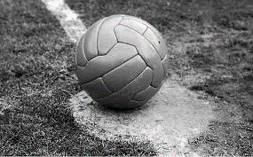
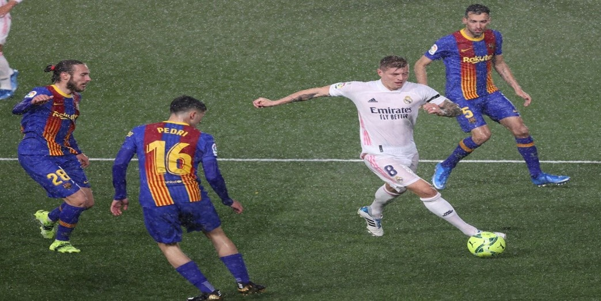
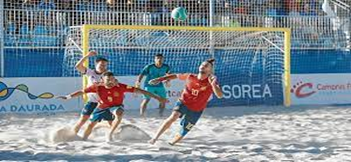
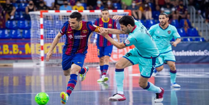

Bienvenidos a Zona de Gol
Donde encontraras toda la informacion a detalle sobre el futbol!!
"Donde nace el futbol".
Los primeros orígenes del futbol se remontan a los siglos III y II antes de la era cristiana, pero su año real de fundación se considera en 1863 con la creación de “The Football Association”. El fútbol actual es de origen inglés y es documentado por vez primera en las islas británicas. Eso sí, las primeras reglas del fútbol británico distaban mucho de las actuales, el juego era algo anárquico y bastante violento. En esa época Italia pudo influir a los ingleses en sus códigos futbolísticos, con su famoso calcio florentino, pero realmente el fútbol actual tiene su momento de aparición ya en el siglo XIX. Es en 1848 que varios colegios ingleses crean el Código Cambridge, que supone la base reglamentaria del fútbol actual, y unos años más tarde es Londres la primera en oficializar las primeras normas del fútbol actual. Desde ese momento el deporte estrella no ha parado de crecer siendo el más popular del mundo y alcanzando 270 millones de representantes. Siendo la Copa Mundial de Fútbol el evento de mayor audiencia en toda la historia del deporte.
"El fútbol es el rey del deporte".
Millones de personas juegan al fútbol o participan pasivamente viendo los partidos favoritos del deporte estrella. Un deporte que consiste básicamente en golpear una pelota y que sin embargo fascina a todo el mundo, de cualquier raza, color o bandera. Es un deporte cargado de magnetismo que atrae y mueve masas, que son capaces de desplazarse a enormes distancias por ver competir y ganar a su equipo favorito.
El fútbol tiene elementos clave que lo convierten en el deporte estrella:
Factor sorpresa. El fútbol está cargado de sorpresas, es un juego que rompe con todos los pronósticos establecidos, y que muchas veces desemboca en el resultado que nadie imaginaba.
Igualdad de oportunidades. Pueden existir equipos con una gran diferencia de presupuesto y, sin embargo, no determinar el resultado final. Un rival débil siempre tendrá la posibilidad
de ganar un partido y derrocar al más fuerte.
Sentimiento. El fútbol transmite un fuerte sentimiento en su afición que en muchas ocasiones se transmite de generación en generación, donde el espectador abandera a su equipo favorito
como a sus propios ideales.
Facilidad de transmitir. La pasión del fútbol se transmite con mucha facilidad. Su afición acompaña a su equipo en todas sus travesías y partidos, no podemos negar que este deporte influye
notablemente en las vidas de su afición.
La fuerza de equipo. Un futbolista puede ser muy bueno, pero sino colabora con su equipo el juego fracasa. La fuerza de equipo, la solidaridad con los otros compañeros provoca una empatía
que invade las gradas. El equipo y su afición se integran para formar parte de una gran familia.
"Futbol y sus modalidades".
Los primeros orígenes del futbol se remontan a los siglos III y II antes de la era cristiana, pero su año real de fundación se considera en 1863 con la creación de “The Football Association”. El fútbol actual es de origen inglés y es documentado por vez primera en las islas británicas. Eso sí, las primeras reglas del fútbol británico distaban mucho de las actuales, el juego era algo anárquico y bastante violento. En esa época Italia pudo influir a los ingleses en sus códigos futbolísticos, con su famoso calcio florentino, pero realmente el fútbol actual tiene su momento de aparición ya en el siglo XIX. Es en 1848 que varios colegios ingleses crean el Código Cambridge, que supone la base reglamentaria del fútbol actual, y unos años más tarde es Londres la primera en oficializar las primeras normas del fútbol actual. Desde ese momento el deporte estrella no ha parado de crecer siendo el más popular del mundo y alcanzando 270 millones de representantes. Siendo la Copa Mundial de Fútbol el evento de mayor audiencia en toda la historia del deporte.
El fútbol es el deporte más popular del mundo y, personas de todo sexo y edad lo disfrutan en diferentes modalidades, cada una ajustada a los gustos y condiciones de los jugadores, incluyendo aquellos con algún nivel de discapacidad.
El fútbol tradicional:
Futbol tradicional de 11 es el que la mayoría de la gente conoce y recibe más difusión. Se juega con equipos de 11 jugadores, con partidos compuestos de dos tiempos de 45 minutos con 15 minutos de descanso intermedio. La cancha de fútbol tradicional es de pasto natural o sintético, siendo la más grande entre las diferentes modalidades del balompié.
Fútbol de playa:
El fútbol playa es una modalidad de fútbol que se juega sobre una superficie de arena lisa, entre dos equipos de cinco jugadores cada uno cuyo objetivo es marcar más goles que el equipo contrario. Fútbol de sala:
El fútbol sala, fútbol de salón, fútsal, futsal o microfútbol; es un deporte colectivo de pelota practicado entre dos equipos de 5 jugadores cada uno, dentro de una cancha de suelo duro. Surgió inspirado en otros deportes como el fútbol, que es la base del juego; el waterpolo; el voleibol; el balonmano y el baloncesto; tomando de estos no solo parte de las reglas, sino también algunas tácticas de juego. "Máximos Goleadores del futbol".
| # | Jugador | G |
|---|---|---|
| 1 | Cristiano Ronaldo | 813 |
| 2 | Josef Bican | 805 |
| 2 | Lionel Messi | 762 |
| 4 | Pelé | 757 |